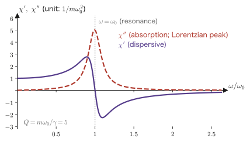
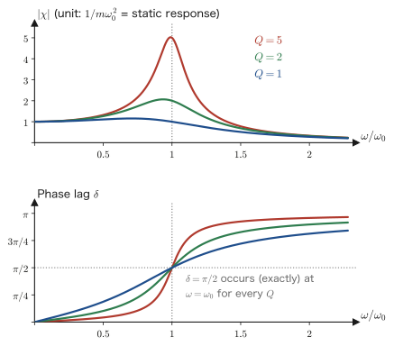
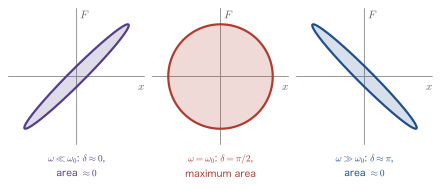

Chapter 3Forced Oscillation and the Response Function
In Chapter 2 we went out of our way to re-solve the damped oscillator without an external force using Green's functions. What we obtained was
$$ G^R(s) = \frac{1}{m\omega_1}\,\ee^{-\Gamma s}\sin(\omega_1 s)\,\theta(s), \qquad \Gamma=\frac{\gamma}{2m},\quad \omega_1=\sqrt{\omega_0^2-\Gamma^2},\quad \omega_0^2=\frac{k}{m} $$the “full history of the reply” starting from the instant we kick the oscillator. In this chapter we keep kicking this oscillator. That is, we apply a periodic external force continuously and examine how the system responds in the steady state.
What we do is the same as the forced oscillation of high-school physics. If we are careful about how we write the answer, however, the complex susceptibility $\chi(\omega)$ appears. And we arrive at the following line, the heart of this chapter.
The response function is nothing other than the Fourier transform of the retarded Green's function. This one line is the backbone of this book. The Kubo formula for quantum systems, which we derive in Chapter 7,
$$ \chi^R_{AB}(\omega) = \int_0^\infty \dd t\;\ee^{\ii\omega t}\left(-\frac{\ii}{\hbar}\right)\braket{[\hat{A}_H(t),\hat{B}_H(0)]} $$has exactly the same form, with only the content of $G^R(s)$ replaced by the expectation value of a commutator. If in this chapter we examine thoroughly the character of the classical $\chi(\omega)$—its real part represents dispersion, its imaginary part represents dissipation, and its poles tell us the natural oscillations—we will not be at a loss from Chapter 7 on.
- The steady-state solution of the forced oscillation $m\ddot{x}+\gamma\dot{x}+kx=F_0\ee^{-\ii\omega t}$ and the complex susceptibility $\chi(\omega)=\left[m(\omega_0^2-\omega^2)-\ii\gamma\omega\right]^{-1}$—how the sign of the imaginary part of the denominator is fixed by the Fourier convention
- Confirming, by carrying out the integral, that $\chi(\omega)$ is the Fourier transform of the retarded Green's function (the crux of this chapter)
- The decomposition into the real part $\chi'$ and the imaginary part $\chi''$, and the characteristic shapes of the two curves, the dispersive and the Lorentzian
- The amplitude $\abs{\chi}$ and the phase lag $\delta$, and $\delta=\pi/2$ at resonance
- $\chi''$ gives the energy dissipation: a complete derivation of $\braket{\dd W/\dd t}=\frac{1}{2}\omega F_0^2\chi''(\omega)$, and the positivity of the dissipation, $\omega\chi''(\omega)\ge 0$
- The resonance width $\Delta\omega=\gamma/m$ and the $Q$ factor, and the seed of a sum rule that does not depend on $\gamma$
- Examples: the Lorentz oscillator model of a dielectric, the Drude model of a metal, absorption lines in NMR, and internal friction in materials
3.1 Finding the Steady-State Response Directly
3.1.1 Problem setup, and why we use $\ee^{-\ii\omega t}$
The equation we treat is the equation of motion of Chapter 2 with an external force put on the right-hand side.
$$ \begin{equation} m\ddot{x} + \gamma\dot{x} + kx = F(t) \label{eq:3-eom} \end{equation} $$As the external force, we apply a monochromatic (single-frequency) force of angular frequency $\omega$.
Notation Note: Use $\ee^{-\ii\omega t}$, not $\ee^{+\ii\omega t}$
Textbooks on forced oscillation often write the external force as $F(t)=F_0\ee^{\ii\omega t}$. In this book, however, we take the sign of the exponent to be negative:
$$ \begin{equation} F(t) = F_0\,\ee^{-\ii\omega t} \label{eq:3-force} \end{equation} $$There is only one reason: to match the Fourier convention of Chapter 1, $f(\omega)=\int\dd t\,f(t)\ee^{\ii\omega t}$, $f(t)=\int\frac{\dd\omega}{2\pi}f(\omega)\ee^{-\ii\omega t}$. Since the integrand of the inverse transform is $\ee^{-\ii\omega t}$, the “component of frequency $\omega$” must be something that oscillates as $\ee^{-\ii\omega t}$; otherwise things do not fit together.
If we used $\ee^{+\ii\omega t}$, every $\chi(\omega)$ obtained below would become its complex conjugate, and the sign of the imaginary part would be reversed. If the signs do not seem to match, first check which convention you are using. In electrical engineering $\ee^{+j\omega t}$ is the standard, so be careful when moving between textbooks.
Note also that $F(t)$ is complex only for computational convenience. The coefficients $m,\gamma,k$ of Eq. \eqref{eq:3-eom} are all real, so taking the real part at the end gives the actual physics. The procedure for treating a real external force rigorously is carried out in Section 3.5.
3.1.2 Substituting and tracking the signs line by line
Derivation: Substituting the steady-state solution $x(t)=x_0\ee^{-\ii\omega t}$
Step 1: Assuming the form of the solution. Since the external force oscillates as $\ee^{-\ii\omega t}$, in the steady state, after sufficient time has passed, the response should oscillate at the same frequency. Taking the amplitude to be a complex number $x_0$ (which includes the phase shift), we put
$$ x(t) = x_0\,\ee^{-\ii\omega t} $$Our goal is to determine this $x_0$.
Step 2: Carrying out the differentiation. This is where the signs part ways.
$$ \dot{x}(t) = \frac{\dd}{\dd t}\left(x_0\ee^{-\ii\omega t}\right) = x_0\cdot(-\ii\omega)\,\ee^{-\ii\omega t} = -\ii\omega\, x_0\ee^{-\ii\omega t} $$ $$ \ddot{x}(t) = \frac{\dd}{\dd t}\left(-\ii\omega\, x_0\ee^{-\ii\omega t}\right) = (-\ii\omega)^2 x_0\ee^{-\ii\omega t} = -\omega^2\, x_0\ee^{-\ii\omega t} $$In the second derivative, $(-\ii\omega)^2=(-\ii)^2\omega^2=(-1)^2\ii^2\omega^2=-\omega^2$, so the $\ii$ disappears. That is, the $\ddot{x}$ term retains no information about the sign of $\omega$. On the other hand, the $\dot{x}$ term retains the imaginary number $-\ii\omega$. Only the friction term produces an imaginary part—this is the fact that governs this entire chapter.
Step 3: Putting it into the equation. The left-hand side of Eq. \eqref{eq:3-eom} is
$$ m\left(-\omega^2 x_0\ee^{-\ii\omega t}\right) + \gamma\left(-\ii\omega x_0\ee^{-\ii\omega t}\right) + k\left(x_0\ee^{-\ii\omega t}\right) $$ $$ = \left[-m\omega^2 - \ii\gamma\omega + k\right] x_0\, \ee^{-\ii\omega t} $$The right-hand side is $F_0\ee^{-\ii\omega t}$. Comparing the two sides, we have
$$ \left[-m\omega^2 - \ii\gamma\omega + k\right] x_0\, \ee^{-\ii\omega t} = F_0\,\ee^{-\ii\omega t} $$Step 4: Dividing by $\ee^{-\ii\omega t}$. The exponential function never vanishes for any $t$ ($\abs{\ee^{-\ii\omega t}}=1$), so we may divide both sides by it.
$$ \left[-m\omega^2 - \ii\gamma\omega + k\right] x_0 = F_0 $$The differential equation has become a plain linear equation for $x_0$. This is the most concrete manifestation of the statement that “after a Fourier transform, differentiation becomes multiplication.”
Step 5: Factoring out $m$ and using $\omega_0^2=k/m$.
$$ -m\omega^2 - \ii\gamma\omega + k = m\left(\frac{k}{m}-\omega^2\right) - \ii\gamma\omega = m\left(\omega_0^2-\omega^2\right) - \ii\gamma\omega $$Step 6: Solving for $x_0$ and dividing by $F_0$.
∎ This is the complex susceptibility. Please burn into your memory that the sign of the imaginary part of the denominator is minus.
A three-line checklist for getting the signs right
This is a place where many students really do stumble. When in doubt, just check the following three lines in order.
- Is the convention $\ee^{-\ii\omega t}$ or $\ee^{+\ii\omega t}$? This book uses $\ee^{-\ii\omega t}$.
- Therefore $\dfrac{\dd}{\dd t}\to -\ii\omega$ and $\dfrac{\dd^2}{\dd t^2}\to -\omega^2$.
- The friction term $\gamma\dot{x}$ produces $-\ii\gamma\omega$, so the denominator is $\cdots-\ii\gamma\omega$. Hence $\mathrm{Im}\,\chi>0$ for $\omega>0$.
The last statement, “$\mathrm{Im}\,\chi>0$ for $\omega>0$,” is, as we will see in Section 3.5, exactly the physics of the system absorbing energy. If the sign is mixed up, we are led to the conclusion that the system creates energy. Whenever something seems physically wrong, always return to these three lines.
Incidentally, the $\chi(\omega)=\left[m(\omega_0^2-\omega^2)+\ii\gamma\omega\right]^{-1}$ found in the literature written in the $\ee^{+\ii\omega t}$ convention is the complex conjugate of Eq. \eqref{eq:3-chi} of this book. The two describe the same physics; the only differences are whether the quantity expressing absorption is $+\mathrm{Im}\,\chi$ or $-\mathrm{Im}\,\chi$, and whether the region in which $\chi$ is analytic is the upper or the lower half-plane.
3.1.3 Checking the result against limiting cases
Check: Three limits
(a) $\omega\to0$ (static limit). $\chi(0)=1/(m\omega_0^2)=1/k$. This is Hooke's law $x=F/k$ itself. The static susceptibility of Chapter 1, Section 1.5.2, has now appeared in the familiar form $1/k$.
(b) $\omega\to\infty$ (high-frequency limit). In the denominator $-m\omega^2$ overwhelms the other terms, so $\chi\simeq-1/(m\omega^2)$. In fact, solving $m\ddot{x}=F_0\ee^{-\ii\omega t}$ gives $x_0=-F_0/(m\omega^2)$. If we shake the system fast, the spring and the friction have no time to be felt, and the point mass responds through its inertia alone. The sign is negative because the external force and the displacement are in antiphase.
(c) $\gamma\to0$ (frictionless limit). $\chi\to1/[m(\omega_0^2-\omega^2)]$ is real and diverges at $\omega=\omega_0$. This is the conclusion of high-school physics that, without friction, the amplitude becomes infinite at resonance. Conversely, $\gamma$ is needed precisely to stop the divergence at resonance, and that same $\gamma$ is what gives $\chi$ its imaginary part. “Having an imaginary part,” “the divergence remaining finite,” and “energy being dissipated” are different faces of one and the same fact.
3.2 The Response Function Is the Fourier Transform of the Green's Function
The crux of this chapter begins here. In Section 3.1 we obtained $\chi(\omega)$ by substituting directly into the differential equation. In this section we start from a completely different path—the convolution integral of Chapter 1 and the Green's function of Chapter 2—and arrive at the same $\chi(\omega)$. Because the two paths merge, the equality “response function = Fourier transform of the Green's function” is established beyond any doubt.
3.2.1 Inserting a monochromatic force into the convolution integral
Derivation: How the form $x(t)=\chi(\omega)F(t)$ emerges
Step 1: Starting point. By the result of Chapter 2, the response to an arbitrary external force $F(t)$ can be written as
$$ \begin{equation} x(t) = \int_{-\infty}^{\infty} G^R(t-t')\,F(t')\,\dd t' \label{eq:3-conv} \end{equation} $$Here $G^R$ is the retarded Green's function, which satisfies $G^R(s)=0$ ($s<0$).
Step 2: Substituting the monochromatic force. Letting $F(t')=F_0\ee^{-\ii\omega t'}$, we have
$$ x(t) = \int_{-\infty}^{\infty} G^R(t-t')\,F_0\,\ee^{-\ii\omega t'}\,\dd t' $$Step 3: Change of variables $s=t-t'$. Here we proceed carefully. Since we fix $t$ and regard $t'$ as the integration variable, setting $s=t-t'$ gives $t'=t-s$ and $\dd t'=-\dd s$. The limits of integration are turned upside down:
$$ t'=-\infty \;\Longrightarrow\; s=+\infty, \qquad t'=+\infty \;\Longrightarrow\; s=-\infty $$Therefore
$$ x(t) = \int_{s=+\infty}^{s=-\infty} G^R(s)\,F_0\,\ee^{-\ii\omega (t-s)}\,(-\dd s) = \int_{-\infty}^{\infty} G^R(s)\,F_0\,\ee^{-\ii\omega (t-s)}\,\dd s $$The minus sign cancels the reversal of the integration interval, and the orientation is restored.
Step 4: Decomposing the exponential. We have $\ee^{-\ii\omega(t-s)}=\ee^{-\ii\omega t}\,\ee^{+\ii\omega s}$. Since $\ee^{-\ii\omega t}$ does not contain the integration variable $s$, it can be taken outside the integral.
$$ x(t) = F_0\,\ee^{-\ii\omega t}\int_{-\infty}^{\infty} G^R(s)\,\ee^{\ii\omega s}\,\dd s $$Step 5: Cutting off the lower limit by causality. Since $G^R(s)=0$ ($s<0$), the part with $s<0$ does not contribute to the integral.
$$ x(t) = \underbrace{F_0\,\ee^{-\ii\omega t}}_{\textstyle =\,F(t)}\; \underbrace{\int_{0}^{\infty} G^R(s)\,\ee^{\ii\omega s}\,\dd s}_{\textstyle \equiv\, G^R(\omega)} $$Step 6: Comparing with Section 3.1. In Section 3.1 we had $x(t)=x_0\ee^{-\ii\omega t}=\chi(\omega)F_0\ee^{-\ii\omega t}=\chi(\omega)F(t)$. The expression we have just obtained also has the form $x(t)=G^R(\omega)F(t)$. Since this holds for arbitrary $F_0$ and arbitrary $t$, the two coefficients must be equal.
∎ The response function $\chi(\omega)$ is nothing other than the Fourier transform of the retarded Green's function $G^R(s)$.
What This Equation Says
Put into words, Eq. \eqref{eq:3-chi-is-G} says: “the response $\chi(\omega)$ when we shake the system at frequency $\omega$ is the reply $G^R(s)$ to a single kick, measured with the yardstick $\ee^{\ii\omega s}$.”
$G^R(s)$ has the form $\ee^{-\Gamma s}\sin\omega_1 s$. When we multiply it by $\ee^{\ii\omega s}$ and sum up, if $\omega$ is close to $\omega_1$ the oscillations of the two are in step, and a large value remains without cancellation. If they are far apart, positive and negative values alternate and cancel. This is the true nature of resonance. Resonance means that “the frequency of the natural reply to a kick” and “the frequency at which we shake” are in step. Note also that the right-hand side is exactly the $\chi(\omega)=\int_0^\infty\chi(\tau)\ee^{\ii\omega\tau}\dd\tau$ of Chapter 1, so the expression written there in the abstract is realized here on a concrete function.
Advice from Prof. Takao Kotani: The range of integration may be from $0$ to $\infty$ or from $-\infty$ to $\infty$
In Step 5 we raised the lower limit from $-\infty$ to $0$ on the grounds that $G^R(s)=0$ ($s<0$). This operation, however, is reversible. Since causality is written into the function itself in the form $G^R(s)\propto\theta(s)$, the two sides of
$$ \int_{0}^{\infty} G^R(s)\,\ee^{\ii\omega s}\,\dd s \;=\; \int_{-\infty}^{\infty} G^R(s)\,\ee^{\ii\omega s}\,\dd s $$give the same value. We may write it either way, and when carrying out a perturbation expansion, taking the limits to be $\pm\infty$ is overwhelmingly easier. If the range of integration is the whole real axis, the right-hand side is just the Fourier transform, so the convolution \eqref{eq:3-conv} turns into a simple product $x(\omega)=\chi(\omega)F(\omega)$ in $\omega$ space; a time translation $t\to t+a$ can also be carried out without worrying about the integration interval; and the nested time integrals appearing in higher-order perturbation terms are all brought to integrals over the whole real axis merely by lining up $\theta$ functions. This is exactly why this section writes Eq. \eqref{eq:3-conv} with $\int_{-\infty}^{\infty}$ from the start.
Conversely, the Kubo formula of Chapter 7 is written with $\int_0^\infty$ in order to leave causality in a visible form and to make clear where the convergence factor $\ee^{-\eta s}$ ($\omega\to\omega+\ii\eta$) is to be placed; the two are the same thing. On the $s\to-\infty$ side $G^R$ is identically $0$, so widening the range adds no worry about convergence.
—The above is based on advice received from Prof. Takao Kotani, the developer of the QSGW method (personal communication, August 2026).
3.2.2 Actually carrying out the integral
If Eq. \eqref{eq:3-chi-is-G} is correct, then substituting $G^R(s)$ of Chapter 2 and carrying out the integral should reproduce the result, Eq. \eqref{eq:3-chi}, of Section 3.1. Let us verify this. We write out every step of the calculation.
Derivation: Calculating $\displaystyle\int_0^\infty \frac{1}{m\omega_1}\ee^{-\Gamma s}\sin(\omega_1 s)\,\ee^{\ii\omega s}\,\dd s$
Step 1: Substitution.
$$ \chi(\omega) = \int_0^\infty \frac{1}{m\omega_1}\,\ee^{-\Gamma s}\sin(\omega_1 s)\;\ee^{\ii\omega s}\,\dd s = \frac{1}{m\omega_1}\int_0^\infty \ee^{-\Gamma s}\,\sin(\omega_1 s)\,\ee^{\ii\omega s}\,\dd s $$($\theta(s)$ has already been used by setting the lower limit of integration to $0$.)
Step 2: Rewriting the sine as exponential functions with Euler's formula. With trigonometric functions we would have to integrate by parts twice, but with exponentials it takes a single step.
$$ \sin(\omega_1 s) = \frac{\ee^{\ii\omega_1 s} - \ee^{-\ii\omega_1 s}}{2\ii} $$Inserting this, we obtain
$$ \chi(\omega) = \frac{1}{2\ii\, m\omega_1}\int_0^\infty \left[\ee^{-\Gamma s}\ee^{\ii\omega_1 s}\ee^{\ii\omega s} - \ee^{-\Gamma s}\ee^{-\ii\omega_1 s}\ee^{\ii\omega s}\right]\dd s $$Step 3: Combining the exponents. The exponent of the first term is $-\Gamma s+\ii\omega_1 s+\ii\omega s = -\left[\Gamma-\ii(\omega+\omega_1)\right]s$, and that of the second term is $-\left[\Gamma-\ii(\omega-\omega_1)\right]s$. Defining
$$ a_+ \equiv \Gamma - \ii(\omega+\omega_1), \qquad a_- \equiv \Gamma - \ii(\omega-\omega_1) $$we have
$$ \chi(\omega) = \frac{1}{2\ii\,m\omega_1}\left[\int_0^\infty \ee^{-a_+ s}\,\dd s - \int_0^\infty \ee^{-a_- s}\,\dd s\right] $$Step 4: Checking convergence. The integral $\int_0^\infty\ee^{-as}\dd s$ converges when $\mathrm{Re}\,a>0$. Now we have
$$ \mathrm{Re}\,a_\pm = \Gamma = \frac{\gamma}{2m} > 0 $$and, as long as $\omega$ is real, both integrals converge. Note here that the friction $\gamma>0$ is at work. For $\gamma=0$ we would have $\mathrm{Re}\,a_\pm=0$, the integrals would not converge, and $\chi(\omega)$ would have poles on the real axis (the divergence in Section 3.1.3(c)). It is thanks to dissipation that the Fourier transform exists.
Step 5: Carrying out the integral.
$$ \int_0^\infty \ee^{-as}\,\dd s = \left[\frac{\ee^{-as}}{-a}\right]_0^\infty = 0 - \left(-\frac{1}{a}\right) = \frac{1}{a} $$(That $\ee^{-as}\to0$ at the upper limit is due to $\mathrm{Re}\,a>0$.) Therefore
$$ \chi(\omega) = \frac{1}{2\ii\,m\omega_1}\left[\frac{1}{a_+} - \frac{1}{a_-}\right] $$Step 6: Bringing to a common denominator.
$$ \frac{1}{a_+}-\frac{1}{a_-} = \frac{a_- - a_+}{a_+ a_-} $$The numerator is
$$ a_- - a_+ = \left[\Gamma-\ii(\omega-\omega_1)\right] - \left[\Gamma-\ii(\omega+\omega_1)\right] = -\ii\omega+\ii\omega_1+\ii\omega+\ii\omega_1 = 2\ii\omega_1 $$It came out neatly as $2\ii\omega_1$. This is in exactly the form that cancels the earlier $\dfrac{1}{2\ii m\omega_1}$.
Step 7: Expanding the denominator $a_+a_-$. Writing $a_\pm=\Gamma-\ii b_\pm$ ($b_+=\omega+\omega_1$, $b_-=\omega-\omega_1$), we have
$$ a_+a_- = (\Gamma-\ii b_+)(\Gamma-\ii b_-) = \Gamma^2 - \ii\Gamma b_- - \ii b_+\Gamma + (\ii)^2 b_+b_- = \Gamma^2 - \ii\Gamma(b_++b_-) - b_+b_- $$Here
$$ b_++b_- = (\omega+\omega_1)+(\omega-\omega_1) = 2\omega, \qquad b_+b_- = (\omega+\omega_1)(\omega-\omega_1) = \omega^2-\omega_1^2 $$so that
$$ a_+a_- = \Gamma^2 - 2\ii\Gamma\omega - \omega^2 + \omega_1^2 $$Step 8: Using $\omega_1^2=\omega_0^2-\Gamma^2$. By the definition in Chapter 2 (restated below the expression for $G^R$ at the beginning of this chapter), $\omega_1^2 = \omega_0^2-\Gamma^2$. Upon substitution, $\Gamma^2$ cancels.
$$ a_+a_- = \Gamma^2 - 2\ii\Gamma\omega - \omega^2 + \omega_0^2 - \Gamma^2 = \omega_0^2 - \omega^2 - 2\ii\Gamma\omega $$The cancellation of $\Gamma^2$ here is the most satisfying part of this calculation. The “damped natural frequency” $\omega_1$ appears only in the intermediate steps, and only $\omega_0$ and $\Gamma$ remain in the final result.
Step 9: Putting it together.
$$ \chi(\omega) = \frac{1}{2\ii\,m\omega_1}\cdot\frac{2\ii\omega_1}{\omega_0^2-\omega^2-2\ii\Gamma\omega} = \frac{1}{m\left(\omega_0^2-\omega^2-2\ii\Gamma\omega\right)} $$Finally, using $\Gamma=\gamma/2m$, that is, $2m\Gamma=\gamma$, we have $m\cdot 2\ii\Gamma\omega = \ii\gamma\omega$, so
∎ This agrees exactly with Eq. \eqref{eq:3-chi} of Section 3.1.
Physical Meaning: The weight of the two paths merging
We have arrived at the same $\chi(\omega)$ by two paths. Path A (Section 3.1) is an algebraic method of substituting into the differential equation; it is fast, but it can be used only for “a system whose equation of motion can be written.” Path B (Section 3.2) is a method of integrating the reply $G^R(s)$ to a single kick; it is a detour, but it can be used even when the equation of motion cannot be written. All that is needed is to know what $G^R(s)$ is.
We cannot write down the equations of motion of $10^{23}$ electrons, so Path A is hopeless for many-particle systems. Path B, however, survives. The Kubo formula of Chapter 7 is nothing but Eq. \eqref{eq:3-chi-is-G} with “the equilibrium expectation value of a commutator” placed where $G^R(s)$ stands. The structure established in this chapter lifts directly to quantum many-body systems.
Advice from Prof. Takao Kotani: Think by going back and forth between $\omega$ space and real time
The merging of the two paths has yet another reading. One and the same content can be written both in the language of real time, $G^R(s)$, and in the language of $\omega$ space, $\chi(\omega)$. In real time we can see causality ($0$ for $s<0$), the transient response right after the kick, and the lifetime $\ee^{-\Gamma s}$. In $\omega$ space we can see the resonance at $\omega\simeq\omega_0$, the phase lag $\delta$, and the dissipation represented by the imaginary part $\chi''$. Looking at only one of them is equivalent to looking with one eye.
For example, the poles $\omega=\pm\omega_1-\ii\Gamma$ of $\chi(\omega)$ are, in real time, exactly the damping rate and the frequency of $\ee^{-\Gamma s}\sin(\omega_1 s)$. This correspondence, “the imaginary part of the pole is the inverse of the lifetime,” appears in exactly the same form in the complex analysis of Chapter 5 and in the spectral representation of Chapter 8. In the QSGW method of Chapter 14 as well, it shows up in the form that the anti-Hermitian part of the self-energy $\Sigma$ gives the quasiparticle lifetime (there one deliberately takes only the Hermitian part in order to keep the quasiparticle energy real, but this is permitted because the part that gives the lifetime vanishes near $E_F$). Always thinking while going back and forth between both representations—this is the very ability to master linear response theory.
—The above is based on advice received from Prof. Takao Kotani, the developer of the QSGW method (personal communication, August 2026).
3.3 Separating the Real and Imaginary Parts
3.3.1 Rationalizing the denominator
In Eq. \eqref{eq:3-chi} the denominator is still complex. Let us separate the result into its real and imaginary parts. Following convention, we write
$$ \begin{equation} \chi(\omega) = \chi'(\omega) + \ii\,\chi''(\omega), \qquad \chi'\equiv\mathrm{Re}\,\chi,\quad \chi''\equiv\mathrm{Im}\,\chi \label{eq:3-split} \end{equation} $$Note that $\chi''$ is not the second derivative of $\chi$. The primes are symbols for the real and imaginary parts, and this notation is completely established in linear response theory.
Derivation: Rationalizing the denominator
Step 1: Naming the real and imaginary parts of the denominator.
$$ A \equiv m(\omega_0^2-\omega^2), \qquad B \equiv \gamma\omega $$Then $\chi=\dfrac{1}{A-\ii B}$. Both $A$ and $B$ are real numbers.
Step 2: Multiplying the numerator and denominator by the complex conjugate of the denominator. This is the standard method of rationalization.
$$ \chi = \frac{1}{A-\ii B}\cdot\frac{A+\ii B}{A+\ii B} = \frac{A+\ii B}{(A-\ii B)(A+\ii B)} $$Step 3: Computing the denominator. $(A-\ii B)(A+\ii B) = A^2 + \ii AB - \ii AB - (\ii)^2B^2 = A^2+B^2$. The imaginary unit has disappeared, and the denominator is now real.
$$ \chi = \frac{A+\ii B}{A^2+B^2} = \frac{A}{A^2+B^2} + \ii\,\frac{B}{A^2+B^2} $$Step 4: Restoring $A$ and $B$.
∎ The denominators are the same; only the numerators differ. If the numerator is the “spring and inertia term,” we get the real part; if it is the “friction term,” we get the imaginary part.
Physical Meaning: The real part stores, the imaginary part discards
Compare the numerators in Eq. \eqref{eq:3-reim}. The numerator $m(\omega_0^2-\omega^2)$ of $\chi'$ comes from the spring constant $k=m\omega_0^2$ and the inertia $-m\omega^2$, and both are elements that store energy. The numerator $\gamma\omega$ of $\chi''$ comes from friction alone, which is an element that discards energy.
Therefore we can read $\chi'$ as the “storing response” and $\chi''$ as the “discarding response.” In Section 3.5 we will turn this into a quantitative equality. This is why $\chi'$ is called the dispersion and $\chi''$ the absorption or dissipation. This correspondence remains unchanged in quantum theory: in Chapter 8, $\mathrm{Im}\,\chi^R(\omega)$ gives the spectral function (the probability that an excitation actually occurs).
3.3.2 Checking the symmetry
Symmetry: $\chi'$ is an even function, $\chi''$ is an odd function
In Eq. \eqref{eq:3-reim}, replace $\omega\to-\omega$. The denominator $m^2(\omega_0^2-\omega^2)^2+\gamma^2\omega^2$ contains only $\omega^2$ and is therefore invariant; the numerator $m(\omega_0^2-\omega^2)$ of $\chi'$ is also invariant; only the numerator $\gamma\omega$ of $\chi''$ changes sign. Hence
$$ \begin{equation} \chi'(-\omega)=+\chi'(\omega),\qquad \chi''(-\omega)=-\chi''(\omega) \label{eq:3-parity} \end{equation} $$That is, $\chi(-\omega)=\chi(\omega)^*$, which agrees with the general result of Exercise 1.2 in Chapter 1. We will make essential use of this even–odd symmetry in Chapter 4, when we rewrite the Kramers–Kronig relations as “integrals over positive $\omega$ only.” Moreover, since $\chi''$ is an odd function, $\chi''(0)=0$ follows automatically; that is, a static force causes no dissipation (pushing slowly produces no heat).
3.3.3 What the graphs look like

Approximate form near resonance (Lorentzian)
For $Q\gg1$, that is, $\Gamma\ll\omega_0$, near $\omega\simeq\omega_0$ we have $\omega_0^2-\omega^2=(\omega_0-\omega)(\omega_0+\omega)\simeq-2\omega_0(\omega-\omega_0)$ and $\gamma\omega\simeq2m\Gamma\omega_0$, so the denominator becomes $4m^2\omega_0^2\left[(\omega-\omega_0)^2+\Gamma^2\right]$ and
$$ \begin{equation} \chi'' \simeq \frac{\Gamma}{2m\omega_0}\cdot\frac{1}{(\omega-\omega_0)^2+\Gamma^2}, \qquad \chi' \simeq \frac{-(\omega-\omega_0)}{2m\omega_0}\cdot\frac{1}{(\omega-\omega_0)^2+\Gamma^2} \label{eq:3-lorentz} \end{equation} $$$\chi''$ is a Lorentzian function of width $\Gamma$, and $\chi'$ is its dispersive partner. The value of $\chi''$ at $\omega=\omega_0$ is $1/(\gamma\omega_0)$, which holds exactly even without the approximation. The maximum and minimum of $\chi'$ lie at $\omega=\omega_0\mp\Gamma$ and have the values $\pm1/(2\gamma\omega_0)$, that is, exactly half the height of the peak of $\chi''$. This is nearly true in Figure 3.1 as well (the exact values for $Q=5$ are $+2.78/k$ and $-2.27/k$, so an asymmetry of about 10% remains; the ratio becomes exactly one half as $Q\to\infty$).
Note, however, that the position of what we have been calling the “peak” requires care. Within this approximation $\chi''$ is maximal at $\omega=\omega_0$, but the peak of the exact $\chi''$, without the approximation, is shifted slightly to the low side of $\omega_0$ (to $\omega\simeq\omega_1$), and its maximum value is also slightly larger, $\left[1+1/(16Q^2)+\cdots\right]/(\gamma\omega_0)$. What is maximal exactly at $\omega=\omega_0$ is not $\chi''$ itself but $\omega\chi''$, which is proportional to the absorbed power (Section 3.6). For $Q\gg1$ this distinction is merely a detail of order $O(1/Q^2)$, but it matters when one discusses the resonance frequency precisely.
This pair, “a Lorentzian peak plus its dispersive partner,” shows up in every kind of spectroscopy: the absorption and dispersion signals of NMR, dielectric loss, optical absorption lines, neutron scattering spectra, and so on. When you see this shape in a spectrum, there is a damped oscillator behind it.
3.4 Amplitude and Phase Lag
3.4.1 Converting to polar form
Instead of splitting into real and imaginary parts, we can also split it into an absolute value and an argument.
$$ \begin{equation} \chi(\omega) = \abs{\chi(\omega)}\,\ee^{\ii\delta(\omega)} \label{eq:3-polar} \end{equation} $$Derivation: Expressions for the amplitude and phase, and the meaning of “phase lag”
Step 1: The absolute value. The absolute value of $\chi=1/(A-\ii B)$ is the reciprocal of the absolute value of the denominator.
$$ \abs{\chi} = \frac{1}{\abs{A-\ii B}} = \frac{1}{\sqrt{A^2+B^2}} = \frac{1}{\sqrt{m^2(\omega_0^2-\omega^2)^2+\gamma^2\omega^2}} $$Step 2: The argument. From Eqs. \eqref{eq:3-split} and \eqref{eq:3-reim},
$$ \tan\delta = \frac{\chi''}{\chi'} = \frac{B/(A^2+B^2)}{A/(A^2+B^2)} = \frac{B}{A} = \frac{\gamma\omega}{m(\omega_0^2-\omega^2)} $$Since $\chi''>0$ (for $\omega>0$), $\delta$ always lies in the first or second quadrant, that is, in $0\le\delta\le\pi$. When taking the inverse function of $\tan$, we must also look at the sign of $\chi'$ to fix the quadrant (with $\arctan$ alone one forgets to add $\pi$ when $\omega>\omega_0$).
Step 3: Checking that $\delta$ is a “lag.” The steady-state solution is
$$ x(t) = \chi(\omega)F_0\ee^{-\ii\omega t} = \abs{\chi}\ee^{\ii\delta}F_0\ee^{-\ii\omega t} = \abs{\chi}F_0\,\ee^{-\ii(\omega t-\delta)} $$Taking the real part gives
$$ \mathrm{Re}\,x(t) = \abs{\chi}F_0\cos(\omega t - \delta) $$On the other hand, the real part of the external force is $F_0\cos\omega t$. The function $\cos(\omega t-\delta)$ is maximal when $\omega t=\delta$; that is, the displacement reaches its maximum later than the instant at which the external force is maximal, by $\delta/\omega$. ∎ This is why $\delta$ is called the phase lag.
3.4.2 Three faces of the phase lag
| Regime | $\chi'$ | $\chi''$ | $\delta$ | Behavior | Dominant term |
|---|---|---|---|---|---|
| $\omega\ll\omega_0$ | $\simeq 1/k>0$ | $\simeq \gamma\omega/k^2\to0$ | $\simeq 0$ | Moves in phase with the force | Spring $kx$ |
| $\omega=\omega_0$ | $0$ | $1/(\gamma\omega_0)$ (nearly the maximum) | $\pi/2$ | Force and velocity are in phase | Friction $\gamma\dot{x}$ |
| $\omega\gg\omega_0$ | $\simeq -1/(m\omega^2)<0$ | $\simeq \gamma/(m^2\omega^3)\to0$ | $\simeq \pi$ | Moves in antiphase with the force | Inertia $m\ddot{x}$ |
Physical Meaning: Why is $\delta=\pi/2$ the resonance?
When $\delta=\pi/2$, $x\propto\cos(\omega t-\pi/2)=\sin\omega t$, so $\dot{x}\propto\omega\cos\omega t$, and the velocity is exactly in phase with the external force $F\propto\cos\omega t$. The time during which force and velocity point in the same direction is the longest, so the force does work most efficiently. Pushing a swing at its highest point is inefficient, while pushing it at the lowest point, where it moves fastest, accelerates it best—this is exactly that intuition.
As we will see in Section 3.5, the power is $\frac{1}{2}\omega F_0^2\chi''$, and at $\omega=\omega_0$, where $\chi'=0$, that is, $\delta=\pi/2$, the absorbed power is maximal (exactly so, as shown in Section 3.6). “The phase lags by $90^\circ$” and “the energy absorption is maximal” are two ways of describing the same phenomenon.

There are three “resonance frequencies” — which one do we mean?
The “resonance frequency” shifts slightly depending on the definition.
- The frequency at which $\chi'=0$: from $m(\omega_0^2-\omega^2)=0$, exactly $\omega=\omega_0=\sqrt{k/m}$. It is also the point where the phase lag is $\pi/2$.
- The frequency at which the amplitude $\abs{\chi}$ is maximal: setting $y=\omega^2$, from $\frac{\dd}{\dd y}\left[m^2(\omega_0^2-y)^2+\gamma^2y\right]=-2m^2(\omega_0^2-y)+\gamma^2=0$ we obtain $\omega=\sqrt{\omega_0^2-2\Gamma^2}$. For $Q\le1/\sqrt{2}$ the peak itself disappears.
- The frequency of free decay (Chapter 2): $\omega_1=\sqrt{\omega_0^2-\Gamma^2}$.
All three are $\omega_0\left[1-O(1/Q^2)\right]$, and for $Q=100$ the differences are of order a few $\times10^{-5}$ (coefficients such as $1/4$ and $1/8$ multiply $1/Q^2$). In precision measurements (quartz oscillators, atomic clocks, LIGO), however, this difference matters. Note also that, as we will see in Section 3.6, the frequency at which the absorbed power is maximal is exactly $\omega_0$, and this is the most natural definition physically.
3.5 $\chi''$ Gives the Energy Dissipation
This is the most important section of the chapter. Up to this point we have called $\chi''$ only “the imaginary part,” but in fact it is nothing other than the energy that the system absorbs from the external force per unit time. Moreover, this relation can be derived without using the explicit form of $\chi$ at all. That is, it is a universal relation that holds for every linear response system.
3.5.1 Carefully constructing the response to a real force
Energy is a real quantity, so we cannot work with a complex external force as it stands. Consider the real external force
$$ \begin{equation} F(t) = F_0\cos\omega t \qquad (F_0\ \text{is real}) \label{eq:3-realF} \end{equation} $$We begin by constructing the response to it correctly.
Derivation: Steady-state response to a real external force
Step 1: Decomposing the cosine into two exponentials.
$$ F(t) = F_0\cos\omega t = \frac{F_0}{2}\left(\ee^{-\ii\omega t} + \ee^{+\ii\omega t}\right) $$Step 2: Identifying what each component is. In the convention of this book, the “component of frequency $\omega$” is $\ee^{-\ii\omega t}$. Therefore
- the first term $\ee^{-\ii\omega t}$ is the component of frequency $+\omega$ → its response coefficient is $\chi(\omega)$
- the second term $\ee^{+\ii\omega t}=\ee^{-\ii(-\omega)t}$ is the component of frequency $-\omega$ → its response coefficient is $\chi(-\omega)$
Note that a negative frequency appears quite naturally here. As long as we deal with real signals, $\pm\omega$ always appear in pairs. This is why we examined the properties of $\chi(-\omega)$ in Chapter 1.
Step 3: Adding by linearity.
$$ x(t) = \frac{F_0}{2}\left[\chi(\omega)\,\ee^{-\ii\omega t} + \chi(-\omega)\,\ee^{+\ii\omega t}\right] $$Step 4: Using reality. By Eq. \eqref{eq:3-parity}, $\chi(-\omega)=\chi(\omega)^*$. Also, $\ee^{+\ii\omega t}=\left(\ee^{-\ii\omega t}\right)^*$. Therefore the second term is the complex conjugate of the first, and using $z+z^*=2\,\mathrm{Re}\,z$ we obtain
$$ x(t) = \frac{F_0}{2}\cdot 2\,\mathrm{Re}\left[\chi(\omega)\ee^{-\ii\omega t}\right] = F_0\,\mathrm{Re}\left[\chi(\omega)\ee^{-\ii\omega t}\right] $$Now $x(t)$ is properly real. This guarantees the self-evident fact that a real force yields a real displacement.
Step 5: Expanding the real part. Since $\chi=\chi'+\ii\chi''$ and $\ee^{-\ii\omega t}=\cos\omega t-\ii\sin\omega t$,
$$ \chi\,\ee^{-\ii\omega t} = (\chi'+\ii\chi'')(\cos\omega t - \ii\sin\omega t) $$ $$ = \chi'\cos\omega t - \ii\chi'\sin\omega t + \ii\chi''\cos\omega t - \ii^2\chi''\sin\omega t $$ $$ = \underbrace{\left(\chi'\cos\omega t + \chi''\sin\omega t\right)}_{\text{real part}} + \ii\underbrace{\left(\chi''\cos\omega t - \chi'\sin\omega t\right)}_{\text{imaginary part}} $$Hence
∎
How to read Eq. \eqref{eq:3-xreal} — in-phase and quadrature components
The displacement is the sum of two parts. The term $\chi'\cos\omega t$ is the component that oscillates in the same phase as the external force $F_0\cos\omega t$ (the in-phase component), and the term $\chi''\sin\omega t$ is the component shifted by $90^\circ$ from the external force (the quadrature component).
A lock-in amplifier is an instrument that multiplies the signal by the reference signals $\cos\omega t$ and $\sin\omega t$ separately, takes the time average, and thereby separates and measures these two components. In other words, a lock-in amplifier is a machine that directly measures $\chi'$ and $\chi''$, and dielectric measurements, NMR, and measurements of minute forces all work on this principle. Eq. \eqref{eq:3-xreal} is also the blueprint of a laboratory instrument.
3.5.2 Calculating the work per period
Derivation: $\braket{\dd W/\dd t}=\frac{1}{2}\omega F_0^2\chi''(\omega)$
Step 1: Definition of the power. When a force $F$ moves a point mass by $\dd x$, the work done is $\dd W=F\,\dd x$. Per unit time, this is
$$ \frac{\dd W}{\dd t} = F(t)\,\frac{\dd x}{\dd t} = F(t)\,\dot{x}(t) $$Step 2: Finding the velocity. Differentiate Eq. \eqref{eq:3-xreal} with respect to $t$. Since $\dfrac{\dd}{\dd t}\cos\omega t=-\omega\sin\omega t$ and $\dfrac{\dd}{\dd t}\sin\omega t=+\omega\cos\omega t$,
$$ \dot{x}(t) = F_0\,\omega\left[-\chi'\sin\omega t + \chi''\cos\omega t\right] $$Step 3: Multiplying.
$$ \frac{\dd W}{\dd t} = F_0\cos\omega t \cdot F_0\omega\left[-\chi'\sin\omega t+\chi''\cos\omega t\right] $$ $$ = F_0^2\,\omega\left[-\chi'\,\cos\omega t\,\sin\omega t + \chi''\,\cos^2\omega t\right] $$Step 4: Averaging over one period $T=2\pi/\omega$. We write the time average as $\braket{\cdots}\equiv\dfrac{1}{T}\displaystyle\int_0^T(\cdots)\dd t$. We write down both of the required averages.
(i) The average of the first term. From the double-angle formula $\sin2\theta=2\sin\theta\cos\theta$, $\cos\omega t\sin\omega t=\frac{1}{2}\sin2\omega t$. Therefore
$$ \braket{\cos\omega t\,\sin\omega t} = \frac{1}{T}\int_0^T \frac{1}{2}\sin 2\omega t\,\dd t = \frac{1}{2T}\left[-\frac{\cos2\omega t}{2\omega}\right]_0^T = \frac{1}{2T}\cdot\frac{1-\cos2\omega T}{2\omega} $$Now, since $T=2\pi/\omega$, we have $2\omega T=4\pi$ and $\cos4\pi=1$. Therefore
$$ \braket{\cos\omega t\,\sin\omega t} = \frac{1}{2T}\cdot\frac{1-1}{2\omega} = 0 $$(ii) The average of the second term. From the half-angle formula $\cos^2\theta=\frac{1+\cos2\theta}{2}$,
$$ \braket{\cos^2\omega t} = \frac{1}{T}\int_0^T\frac{1+\cos2\omega t}{2}\,\dd t = \frac{1}{2} + \frac{1}{2T}\left[\frac{\sin2\omega t}{2\omega}\right]_0^T = \frac{1}{2} + \frac{\sin4\pi - 0}{4\omega T} = \frac{1}{2} $$Step 5: Substituting. The $\chi'$ term has zero average and vanishes, and only the $\chi''$ term remains.
∎ The work per period is obtained by multiplying this by $T=2\pi/\omega$:
$$ \begin{equation} W_{\text{cycle}} = \oint F\,\dd x = T\left\langle\frac{\dd W}{\dd t}\right\rangle = \frac{2\pi}{\omega}\cdot\frac{1}{2}\omega F_0^2\chi'' = \pi F_0^2\,\chi''(\omega) \label{eq:3-Wcycle} \end{equation} $$It is beautiful that $\omega$ drops out and the result can be written with $\chi''$ alone.
Physical Meaning: Why does the $\chi'$ term vanish?
The term that vanished is $-F_0^2\omega\chi'\cos\omega t\sin\omega t=-\frac{1}{2}F_0^2\omega\chi'\sin2\omega t$. It swings between positive and negative at frequency $2\omega$, and the energy received in the first half is returned in the second half exactly as it was. It is energy that merely goes back and forth, corresponding to the exchange between the elastic energy of the spring and the kinetic energy. In electrical engineering it is called the reactive power.
The remaining $\chi''\cos^2\omega t$ term is always non-negative because $\cos^2\ge0$. The energy flows into the system in one direction only, and leaves as heat through friction. This is the active power, that is, the dissipation. $\chi'$ stores and returns; $\chi''$ receives and turns into heat. This is just what we expected in Section 3.3.1 from the origin of the numerator.
3.5.3 Seeing it in a figure: the work is the area of the loop

3.5.4 Positivity of the dissipation — a constraint imposed by the second law of thermodynamics
Theorem: Positivity of the dissipation
The time average of the work done on the system by the external force must be non-negative. By Eq. \eqref{eq:3-dissipation},
$$ \left\langle\frac{\dd W}{\dd t}\right\rangle = \frac{1}{2}\omega F_0^2\chi''(\omega) \ge 0 $$Since $F_0^2>0$,
That is, $\chi''\ge0$ for $\omega>0$ and $\chi''\le0$ for $\omega<0$. This is consistent with the oddness \eqref{eq:3-parity}.
Check: Verifying with the damped oscillator
By Eq. \eqref{eq:3-reim}, $\omega\chi''(\omega)=\dfrac{\gamma\omega^2}{m^2(\omega_0^2-\omega^2)^2+\gamma^2\omega^2}$. The denominator is a sum of squares of real numbers, hence positive, and the numerator is non-negative because $\gamma>0$ and $\omega^2\ge0$. Indeed $\omega\chi''\ge0$. ∎
Conversely, if the friction coefficient is negative ($\gamma<0$), the system turns into one that does work on the external force. Negative resistance, the gain medium of a laser, and the tunnel diode are examples. However, these are systems that are not in an equilibrium state (they are pumped from outside), and they lie outside the premises of linear response theory. As long as we start from an equilibrium state, $\omega\chi''\ge0$ is never violated.
Physical Meaning: This inequality is another backbone
Eq. \eqref{eq:3-positivity} reaches the farthest of everything we have obtained in this chapter. In Chapter 4 it combines with the Kramers–Kronig relations to yield sum rules; in Chapter 8 it is translated into the non-negativity $S(\omega)\ge0$ of the quantum-theoretical spectral function and determines the sign structure of the fluctuation–dissipation theorem. In Chapter 12, the inelastic scattering cross section of neutrons and electrons is proportional to $\mathrm{Im}\,\chi$ (on the energy-loss side $\omega>0$), but a cross section cannot be negative, so $\mathrm{Im}\,\chi\ge0$ must hold for $\omega>0$.
That is, a trinity runs through this book: “the imaginary part of the response function is positive” = “the second law of thermodynamics” = “the measured quantity is non-negative.” We have just completed its first proof, on the damped oscillator.
Example 3.1: Checking with numbers
A force of amplitude $F_0=0.1\ \mathrm{N}$ is applied at the resonance frequency to a mechanical oscillator with mass $m=10\ \mathrm{g}=0.01\ \mathrm{kg}$, natural frequency $f_0=\omega_0/2\pi=100\ \mathrm{Hz}$, and $Q=50$. Find (1) the friction coefficient $\gamma$, (2) the static displacement, (3) the amplitude at resonance, and (4) the power consumed.
Solution. $\omega_0=2\pi\times100=628.3\ \mathrm{rad/s}$ and $k=m\omega_0^2=3948\ \mathrm{N/m}$. In what follows, intermediate numbers are displayed rounded, but the calculation itself is carried out without rounding (if the rounded values are fed back into the next formula, the last digit may be off by one). In this sense, please read the equals signs as $\simeq$.
(1) From $Q=m\omega_0/\gamma$,
$$ \gamma = \frac{m\omega_0}{Q} = \frac{0.01\times628.3}{50} \simeq 0.1257\ \mathrm{kg/s} $$(2) Since the static susceptibility is $\chi(0)=1/k=2.53\times10^{-4}\ \mathrm{m/N}$, we have $x_{\text{static}}=F_0/k=25.3\ \mu\mathrm{m}$.
(3) At resonance, $\chi'=0$ and $\abs{\chi}=\chi''(\omega_0)=1/(\gamma\omega_0)=1/(0.1257\times628.3)\simeq1.267\times10^{-2}\ \mathrm{m/N}$. Hence
$$ x_{\text{res}} = F_0\,\chi''(\omega_0) \simeq 0.1\times1.267\times10^{-2} = 1.267\ \mathrm{mm} $$This is exactly $50$ times the static displacement, that is, $Q$ times. Indeed,
$$ \frac{\chi''(\omega_0)}{\chi(0)} = \frac{1/(\gamma\omega_0)}{1/(m\omega_0^2)} = \frac{m\omega_0}{\gamma} = Q $$and we see that the $Q$ factor is the amplification factor at resonance.
(4) By Eq. \eqref{eq:3-dissipation},
$$ \left\langle\frac{\dd W}{\dd t}\right\rangle = \frac{1}{2}\times628.3\times(0.1)^2\times1.267\times10^{-2} \simeq 3.98\times10^{-2}\ \mathrm{W} \simeq 40\ \mathrm{mW} $$This entire $40\ \mathrm{mW}$ becomes heat. The energy stored in the oscillator is $E=\frac{1}{2}m\omega_0^2 x_{\text{res}}^2=3.17\ \mathrm{mJ}$, so
$$ \frac{\omega_0 E}{\braket{\dd W/\dd t}} \simeq \frac{628.3\times3.17\times10^{-3}}{3.98\times10^{-2}} \simeq 50.0 = Q $$The other definition of the $Q$ factor, “$Q=\omega_0\times$(stored energy)/(dissipated power),” gave exactly the same value. ∎
3.6 The Resonance Width, the $Q$ Factor, and the Seed of a Sum Rule
3.6.1 The universal form of the absorbed power
Derivation: The exact form of the absorbed power and the full width at half maximum
Substitute the explicit form of $\chi''$, Eq. \eqref{eq:3-reim}, into Eq. \eqref{eq:3-dissipation}.
$$ P(\omega)\equiv\left\langle\frac{\dd W}{\dd t}\right\rangle = \frac{1}{2}\omega F_0^2\cdot\frac{\gamma\omega}{m^2(\omega_0^2-\omega^2)^2+\gamma^2\omega^2} = \frac{F_0^2}{2}\cdot\frac{\gamma\omega^2}{m^2(\omega_0^2-\omega^2)^2+\gamma^2\omega^2} $$Dividing the numerator and the denominator by $\gamma^2\omega^2$, we obtain
In the second equality we used
$$ \frac{m(\omega_0^2-\omega^2)}{\gamma\omega} = \frac{m\omega_0}{\gamma}\cdot\frac{\omega_0^2-\omega^2}{\omega_0\omega} = Q\left(\frac{\omega_0}{\omega}-\frac{\omega}{\omega_0}\right), \qquad Q\equiv\frac{m\omega_0}{\gamma} $$Eq. \eqref{eq:3-power} is exact. Not a single approximation has been used.
Position of the peak. The quantity in the bracket vanishes when $\omega_0/\omega=\omega/\omega_0$, that is, when $\omega=\omega_0$. At this point $P$ takes its maximum value
$$ P_{\max} = \frac{F_0^2}{2\gamma} $$The peak of the absorbed power lies exactly at $\omega=\omega_0$, and of the three “resonance frequencies” of Section 3.4 this is the cleanest definition. Note also that the height of the peak is inversely proportional to $\gamma$. The smaller the friction, the larger the power consumed at resonance.
Full width at half maximum. $P=P_{\max}/2$ holds when the second term of the denominator equals $1$, that is,
$$ \frac{m(\omega_0^2-\omega^2)}{\gamma\omega} = \pm1 \quad\Longleftrightarrow\quad m\omega^2 \pm \gamma\omega - m\omega_0^2 = 0 $$We solve this quadratic equation. Taking only the solutions with $\omega>0$, and writing $\Gamma=\gamma/2m$, we have
$$ \omega_\mp = \frac{\mp\gamma+\sqrt{\gamma^2+4m^2\omega_0^2}}{2m} = \mp\Gamma + \sqrt{\Gamma^2+\omega_0^2} $$The full width at half maximum is the difference of the two, so the square-root term cancels neatly and we obtain
∎ This too is exact. It holds even when $Q$ is small.
Definition: The four faces of the $Q$ factor (all the same quantity)
$$ \begin{equation} Q = \frac{m\omega_0}{\gamma} = \frac{\omega_0}{\Delta\omega} = \frac{\omega_0\times(\text{stored energy})}{(\text{dissipated power})} = \frac{\chi''(\omega_0)}{\chi(0)} \label{eq:3-Q} \end{equation} $$In order, these are (i) the defining expression, (ii) the sharpness of the resonance curve, (iii) how well the energy is retained, and (iv) the amplification factor at resonance. In Example 3.1 we checked numerically that (i), (iii) and (iv) agree. Item (ii) follows from Eq. \eqref{eq:3-fwhm}.
Combining this with the free decay of Chapter 2: the ring-down time over which the amplitude falls to $1/\ee$ is $\tau=1/\Gamma=2m/\gamma$, so $Q=\omega_0\tau/2$, that is, $\tau=2Q/\omega_0$. The sharpness in the frequency domain (a narrow peak) and the length in the time domain (a long memory) are tied together by the same quantity. This is a quantitative restatement of “$\chi(\tau)$ is the memory of the system” in Chapter 1, Section 1.3.
3.6.2 The seed of a sum rule — the peak area does not depend on $\gamma$
Theorem: Two exact sum rules
For $\chi''$ of the damped oscillator, the following two integrals do not depend on the value of $\gamma$.
$$ \begin{equation} \int_0^\infty \omega\,\chi''(\omega)\,\dd\omega = \frac{\pi}{2m}, \qquad \int_0^\infty \frac{\chi''(\omega)}{\omega}\,\dd\omega = \frac{\pi}{2m\omega_0^2} = \frac{\pi}{2}\chi(0) \label{eq:3-sumrule} \end{equation} $$Why does $\gamma$ disappear?
For $Q\gg1$, $\chi''$ can be approximated by the Lorentzian peak, Eq. \eqref{eq:3-lorentz}, whose height is $1/(\gamma\omega_0)\propto1/\gamma$ and whose width is $\Delta\omega=\gamma/m\propto\gamma$. Therefore the area ≈ height × width does not contain $\gamma$. If we increase the friction, the peak becomes lower and broader; if we decrease it, the peak becomes higher and sharper; but the enclosed area is conserved. In fact, using $\int_{-\infty}^{\infty}\Gamma\,\dd\nu/(\nu^2+\Gamma^2)=\pi$, setting $\nu=\omega-\omega_0$, and taking $\omega\simeq\omega_0$ outside the integral, we obtain
$$ \int_0^\infty \omega\chi''\dd\omega \simeq \omega_0\cdot\frac{\Gamma}{2m\omega_0}\cdot\frac{\pi}{\Gamma} = \frac{\pi}{2m} $$The claim of Eq. \eqref{eq:3-sumrule} is that the answer obtained by this approximation actually holds exactly even when $Q$ is small (Exercise 3.5). Note also that $\int_0^\infty\chi''\dd\omega$, without the weight $\omega^{\pm1}$, depends weakly on $\gamma$ and is not strictly conserved.
Physical Meaning: This is the prototype of the $f$-sum rule
The first relation is itself the $f$-sum rule that we derive in Chapter 4. In general, for a system in which $\chi(\omega)\to-1/(m\omega^2)$ at high frequency (the response of a free point mass, Section 3.1.3(b)), the Kramers–Kronig relations imply $\int_0^\infty\omega\chi''\dd\omega=\pi/2m$. Neither $\omega_0$ nor $\gamma$ enters the right-hand side. Regardless of the details of the interaction, the sum is determined by the mass (= the particle number) alone. In Chapter 12 it reappears as the $f$-sum rule of the electron gas, $\int_0^\infty\omega S(\qq,\omega)\dd\omega=\hbar q^2/2m$ ($S$ follows the per-particle normalization of Chapter 12), and becomes a tool for checking the results of calculations. A sum rule is almost the only means of finding mistakes after a complicated calculation is finished.
3.7 Examples — Dielectrics, Metals, NMR, and Internal Friction
The $\chi(\omega)$ of a damped oscillator is not merely a toy for teaching. Most of the response of matter can be written in terms of it, or of a superposition of such terms.
3.7.1 The Lorentz oscillator model of a dielectric
Derivation: From bound electrons to the dielectric function
Step 1: The model. Consider an electron in an insulator (charge $-e$, $e>0$) bound to the nucleus by a spring. When an electric field $E(t)=E_0\ee^{-\ii\omega t}$ is applied, the force on the electron is $-eE(t)$, so
$$ m\ddot{x} + \gamma\dot{x} + m\omega_0^2 x = -e\,E(t) $$This is Eq. \eqref{eq:3-eom} with $F\to -eE$. Therefore we immediately obtain
$$ x(t) = -e\,\chi(\omega)\,E(t), \qquad \chi(\omega)=\frac{1}{m(\omega_0^2-\omega^2)-\ii\gamma\omega} $$Step 2: The dipole moment. When the charge $-e$ is displaced by $x$, the electric dipole moment is $p=(-e)\cdot x = e^2\chi(\omega)E$. Two minus signs multiply, so the result is positive.
Step 3: The polarization. Suppose there are $n$ electrons per unit volume. Then $P = n p = n e^2\chi(\omega)E$. From the definition of the electric susceptibility, $P=\chi_e E$, we get
$$ \chi_e(\omega) = \frac{ne^2}{m(\omega_0^2-\omega^2)-\ii\gamma\omega} $$Step 4: The dielectric function. In Gaussian units $\epsilon=1+4\pi\chi_e$ (in SI units $\epsilon_r=1+\chi_e/\epsilon_0$). Dividing the numerator and denominator by $m$, we obtain
∎ $\omega_p$ is called the plasma frequency ($\omega_p^2=ne^2/\epsilon_0 m$ in SI). It is the protagonist of Chapter 11.
By the same rationalization as in Section 3.3.1, the real and imaginary parts are
$$ \epsilon'(\omega) = 1+\frac{\omega_p^2(\omega_0^2-\omega^2)}{(\omega_0^2-\omega^2)^2+\tilde{\gamma}^2\omega^2}, \qquad \epsilon''(\omega) = \frac{\omega_p^2\,\tilde{\gamma}\omega}{(\omega_0^2-\omega^2)^2+\tilde{\gamma}^2\omega^2} $$The shape is exactly the same as in Figure 3.1 ($\epsilon'$ is simply lifted up by $1$). Let us list what can be read off from it.
Physical Meaning: All the familiar phenomena of optics appear
- Normal and anomalous dispersion. Away from the absorption band, $\dd\epsilon'/\dd\omega>0$, and the refractive index is larger for bluer light (a prism bends violet the most). Inside the absorption band, $\abs{\omega-\omega_0}\lesssim\tilde\gamma$, however, the sign is reversed. This is anomalous dispersion, and it is always accompanied by strong absorption. “Dispersion and absorption cannot be chosen independently”—this is the physical content of the Kramers–Kronig relations of Chapter 4.
- The Reststrahlen band. When $\omega$ slightly exceeds $\omega_0$, $\epsilon'<0$ is possible. In this region waves cannot propagate and are totally reflected. The highly reflecting infrared band of ionic crystals (NaCl, GaAs) is exactly this, with optical phonons playing the role of the oscillator.
- The absorption coefficient $\alpha\simeq\omega\epsilon''/(n_{\mathrm{r}}c)$ ($n_{\mathrm{r}}$ is the refractive index and $c$ is the speed of light; it is a different quantity from the number density $n$ used so far in this section). It is also $\omega\times$ (the imaginary part). The same structure as $P\propto\omega\chi''$ in Section 3.5 appears in the absorption of light.
3.7.2 The Drude model — the limit $\omega_0\to0$
The conduction electrons in a metal are not bound to the nuclei. It suffices to set the spring constant to zero ($\omega_0\to0$).
Derivation: The Drude conductivity has the same form as Debye relaxation
Write the equation of motion with $k=0$ not for the displacement but for the velocity $v=\dot{x}$.
$$ m\dot{v} + \gamma v = -eE_0\ee^{-\ii\omega t} $$If we put $v=v_0\ee^{-\ii\omega t}$, then $\dd/\dd t\to-\ii\omega$, so
$$ \left(-\ii\omega m + \gamma\right)v_0 = -eE_0 \quad\Longrightarrow\quad v_0 = \frac{-eE_0}{m(\tilde{\gamma}-\ii\omega)},\qquad \tilde\gamma=\frac{\gamma}{m} $$The current density is $j=(-e)nv$ (particles of charge $-e$ flow with velocity $v$), so
$$ j_0 = (-e)n v_0 = \frac{ne^2}{m(\tilde\gamma-\ii\omega)}E_0 $$Therefore the conductivity $\sigma(\omega)=j_0/E_0$ is, using the relaxation time $\tau\equiv1/\tilde\gamma=m/\gamma$ (which is different from the ring-down time $2m/\gamma$ of Section 3.6; the two differ by a factor of 2),
∎ $\sigma_0$ is the DC conductivity (Ohm's law).
This is the same equation as the Debye relaxation of Chapter 1
Eq. \eqref{eq:3-drude} is exactly the same function as $\chi(\omega)=\chi_0/(1-\ii\omega\tau_0)$ of Chapter 1, differing only in the letters. This is no accident. The Green's function of the damped oscillator with $\omega_0=0$ (a free particle with friction) is the simple exponential decay $G^R_v(s)=\frac{1}{m}\ee^{-s/\tau}\theta(s)$, and Fourier-transforming it and multiplying by $ne^2$ gives Eq. \eqref{eq:3-drude} (the same integral as in Example 1.1 of Chapter 1). The Drude model, Debye relaxation, the admittance of an RC circuit, and Brownian motion—all are different names for one and the same response function.
On the dielectric-function side, setting $\omega_0\to0$ in Eq. \eqref{eq:3-lorentz-eps} gives
$$ \epsilon(\omega)=1-\frac{\omega_p^2}{\omega^2+\ii\tilde\gamma\omega} \;\xrightarrow{\ \tilde\gamma\to0\ }\; 1-\frac{\omega_p^2}{\omega^2} $$so that $\epsilon'<0$ for $\omega<\omega_p$ (metallic luster, total reflection), and $\epsilon=0$ at $\omega=\omega_p$. $\epsilon(\omega)=0$ is the condition for a collective excitation (a plasmon), and it is the starting point of Chapter 11. Just as the poles of the response function give the normal modes (Chapter 2), the zeros of the dielectric function also give the normal modes.
3.7.3 $\omega_0$ and $Q$ of real systems
| System | “Displacement” $x$ | “Force” $F$ | $\omega_0/2\pi$ | $Q$ | Meaning of the dissipation $\chi''$ |
|---|---|---|---|---|---|
| Tuning fork | Displacement of the prong | Impact, sound pressure | $440\ \mathrm{Hz}$ | $\sim10^3$ | Acoustic radiation + internal friction |
| Quartz oscillator | Polarization (piezoelectric) | Voltage | $32.768\ \mathrm{kHz}$ | $\sim10^5$ | Determines the accuracy of the clock |
| Series LCR circuit | Charge $q$ | Voltage $V$ | $\sim100\ \mathrm{kHz}$ | $\omega_0L/R\sim10^2$ | Joule heating by the resistance |
| NMR ($^1$H, 9.4 T) | Transverse magnetization $M_\perp$ | RF magnetic field $B_1$ | $400\ \mathrm{MHz}$ | $\sim10^8$ | Absorption signal (spectrum) |
| Optical phonons of an ionic crystal | Relative displacement of positive and negative ions | Electric field $E$ | $\sim5\ \mathrm{THz}$ | $\sim10^2$ | Infrared absorption, Reststrahlen |
| Electronic transition of a dye molecule | Displacement of the electron | Electric field $E$ | $\sim500\ \mathrm{THz}$ | $\sim10$–$10^2$ | Color (absorption of visible light) |
| Conduction electrons in a metal (Drude) | Velocity $v$ | Electric field $E$ | $0$ ($\omega_0=0$) | — | Electrical resistance |
| Test-mass pendulum of LIGO | Position of the mirror | Gravitational waves, thermal noise | $\sim0.75\ \mathrm{Hz}$ | $\sim10^8$ | Source of thermal noise (fluctuation–dissipation theorem) |
Names used in materials engineering: the loss tangent $\tan\delta$ and the internal friction $Q^{-1}$
In the fields of dielectrics and polymers, the tangent of the phase lag, $\tan\delta=\chi''/\chi'$ ($\epsilon''/\epsilon'$ for a dielectric), is called the loss tangent. Well below resonance ($\omega\ll\omega_0$), $\tan\delta\simeq\gamma\omega/(m\omega_0^2)=\omega/(Q\omega_0)$, which is proportional to the inverse of $Q$. The internal friction $Q^{-1}$ of metallic materials is equal to the ratio of the loss per cycle to the stored energy, $\Delta E/(2\pi E)$. That a microwave oven heats food, that the dielectric loss of a substrate becomes a problem at high frequencies, and that a vibration-damping alloy turns vibration into heat are all manifestations of the fact that $\chi''$ is finite.
3.8 Summary and Exercises
3.8.1 Summary
- The steady-state solution of the forced oscillation is obtained simply by substituting $x=x_0\ee^{-\ii\omega t}$. Because $\dd/\dd t\to-\ii\omega$, the differential equation becomes an algebraic equation, and $\chi(\omega)=\left[m(\omega_0^2-\omega^2)-\ii\gamma\omega\right]^{-1}$. Only the friction term produces the imaginary part, and its sign is fixed by the Fourier convention (with the $\ee^{+\ii\omega t}$ convention the whole expression becomes its complex conjugate).
- $\chi(\omega)$ is the Fourier transform of the retarded Green's function: $\chi(\omega)=\int_0^\infty G^R(s)\ee^{\ii\omega s}\dd s$. Substituting the $G^R(s)$ of Chapter 2 and carrying out the integral does indeed give the same $\chi(\omega)$. This is the crux of this chapter, and the template for the Kubo formula of Chapter 7.
- The real part $\chi'$ is dispersion (store and return); the imaginary part $\chi''$ is absorption (receive and turn into heat). $\chi'$ is an even function and is of dispersive line shape, changing sign at resonance; $\chi''$ is an odd function and is Lorentzian, with a positive peak at resonance. The phase lag $\delta$ moves as $0\to\pi/2\to\pi$, and $\delta=\pi/2$ (force and velocity in phase) is the condition for maximum absorption.
- The dissipation formula $\braket{\dd W/\dd t}=\frac{1}{2}\omega F_0^2\chi''(\omega)$. The $\chi'$ term averages to zero over one period (reactive power). Per period, $\oint F\dd x=\pi F_0^2\chi''$, which equals the area of the loop in the $(x,F)$ plane.
- Positivity of dissipation $\omega\chi''(\omega)\ge0$. This is the constraint that the second law of thermodynamics imposes on response functions, and it survives unchanged in quantum theory as the non-negativity of the spectral function.
- The $Q$ factor is $m\omega_0/\gamma=\omega_0/\Delta\omega=\chi''(\omega_0)/\chi(0)=\omega_0\tau/2$. The peak of the absorbed power lies exactly at $\omega_0$, and the full width at half maximum is exactly $\gamma/m$.
- The sum rule $\int_0^\infty\omega\chi''\dd\omega=\pi/2m$ depends on neither $\gamma$ nor $\omega_0$. Whether the peak becomes “low and broad” or “tall and sharp,” the area is unchanged. It is the prototype of the $f$-sum rule of Chapter 4 and of the sum rule for the dynamic structure factor in Chapter 12.
- Applications: the Lorentz oscillator (dielectric function, anomalous dispersion, Reststrahlen), the Drude model ($\omega_0\to0$, isomorphic to Debye relaxation, plasmon at $\epsilon=0$), NMR absorption lines, and internal friction $Q^{-1}$.
| This chapter (classical, one degree of freedom) | Part III (quantum, many-body) |
|---|---|
| Displacement $x(t)$ | Shift of the expectation value of a physical quantity, $\delta\braket{\hat{A}(t)}$ |
| External force $F(t)$ | Perturbation Hamiltonian $\hat{H}_{\text{ext}}=-f(t)\hat{B}$ |
| $G^R(s)=\frac{1}{m\omega_1}\ee^{-\Gamma s}\sin\omega_1 s\,\theta(s)$ | $\chi^R_{AB}(s)=-\frac{\ii}{\hbar}\theta(s)\braket{[\hat{A}_H(s),\hat{B}_H(0)]}$ |
| $\chi(\omega)=\int_0^\infty G^R(s)\ee^{\ii\omega s}\dd s$ | $\chi^R_{AB}(\omega)=\int_0^\infty\dd s\,\ee^{\ii\omega s}\chi^R_{AB}(s)$ |
| Poles $\omega=\pm\omega_1-\ii\Gamma$ | Poles of the Lehmann representation $\omega=\pm(E_n-E_0)/\hbar-\ii\eta$ |
| $\chi''>0$ (dissipation) | $\mathrm{Im}\,\chi^R\ \propto$ spectral function $\ge0$ |
| Sum rule $\int\omega\chi''\dd\omega=\pi/2m$ | $f$-sum rule $\int\omega S(\qq,\omega)\dd\omega=\hbar q^2/2m$ |
3.8.2 Exercises
Exercise 3.1: Computing the static limit in two ways
(1) Setting $\omega=0$ in Eq. \eqref{eq:3-chi-is-G} gives $\chi(0)=\int_0^\infty G^R(s)\,\dd s$. Substitute the $G^R(s)$ of Chapter 2, carry out the integral, and show that $\chi(0)=1/k$.
(2) Explain physically that this result means “the time integral of the displacement after a single kick equals the displacement under a static push that is held on forever.”
Hint: (1) Using the formula $\int_0^\infty\ee^{-\Gamma s}\sin(\omega_1 s)\dd s=\dfrac{\omega_1}{\Gamma^2+\omega_1^2}$, we get $\chi(0)=\dfrac{1}{m\omega_1}\cdot\dfrac{\omega_1}{\Gamma^2+\omega_1^2}=\dfrac{1}{m(\Gamma^2+\omega_0^2-\Gamma^2)}=\dfrac{1}{m\omega_0^2}=\dfrac{1}{k}$. Note that $\Gamma^2$ cancels once again.
Exercise 3.2: Phase lag and the three resonance frequencies
For an oscillator with $Q=10$, find the following numerically, in units of $\omega_0$.
(1) The $\omega$ at which $\chi'=0$. (2) The $\omega=\sqrt{\omega_0^2-2\Gamma^2}$ at which $\abs{\chi}$ is maximal. (3) The free-decay frequency $\omega_1=\sqrt{\omega_0^2-\Gamma^2}$. (4) The $\omega$ at which the phase lag is $\pi/4$ and $3\pi/4$.
Hint: $\Gamma=\omega_0/(2Q)=0.05\omega_0$. (1) $1.0000$, (2) $\sqrt{1-2(0.05)^2}=0.99750$, (3) $\sqrt{1-0.05^2}=0.99875$. (4) Solve $\tan\delta=\pm1$, that is, $m(\omega_0^2-\omega^2)=\pm\gamma\omega$. This is the same equation as for the half-maximum points in Section 3.6.1, and the answer is $\omega=\mp\Gamma+\sqrt{\Gamma^2+\omega_0^2}$, that is, $0.9512\omega_0$ and $1.0512\omega_0$. The half-maximum points are the points where the phase is shifted by $45^\circ$.
Exercise 3.3: The case of a $\sin$ force, and the $2\omega$ component of the instantaneous power
(1) Redo the calculation of Section 3.5.2 for $F(t)=F_0\sin\omega t$, and show that the average power is again $\frac{1}{2}\omega F_0^2\chi''$.
(2) Write the instantaneous power $\dd W/\dd t$ as the sum of a constant term and a term of frequency $2\omega$.
(3) Find the condition under which $\dd W/\dd t$ becomes negative, even for an instant (the system returns work to the force).
Hint: (1) $\braket{\sin^2}=1/2$, $\braket{\sin\cos}=0$. (2) From $x=F_0\left[\chi'\sin\omega t-\chi''\cos\omega t\right]$ we obtain $\dfrac{\dd W}{\dd t}=\dfrac{F_0^2\omega}{2}\left[\chi''-\chi''\cos2\omega t+\chi'\sin2\omega t\right]$ (note that the signs of the oscillating terms are opposite to those in Section 3.5.2, where the drive was $\cos$. As a check, $\dd W/\dd t=0$ at $t=0$ because $F=0$ there). (3) The amplitude of the oscillating part is $\sqrt{\chi'^2+\chi''^2}=\abs{\chi}$, so if $\abs{\chi}>\chi''$, that is, $\chi'\ne0$ (= away from resonance), there are instants at which it is negative. At resonance $\chi'=0$, so $\dd W/\dd t\ge0$ always holds.
Exercise 3.4: A quartz oscillator (numerical)
The quartz oscillator of a wristwatch has $f_0=32768\ \mathrm{Hz}$ and $Q=1.0\times10^5$.
(1) Find the full width at half maximum of the resonance in $\mathrm{Hz}$. (2) Find the time $\tau=2Q/\omega_0$ for the amplitude to fall to $1/\ee$ after the drive is stopped. (3) If the frequency of this oscillator is off by about the reciprocal of $Q$ ($10^{-5}$), how much does the clock go wrong in one day?
Hint: (1) $\Delta f=f_0/Q=0.33\ \mathrm{Hz}$. (2) $\tau=2\times10^5/(2\pi\times32768)=0.97\ \mathrm{s}$. (3) $10^{-5}\times86400\ \mathrm{s}=0.86\ \mathrm{s/day}$. Real clocks are more accurate than this, so we see that they locate the center of the resonance with a precision much better than the reciprocal of $Q$. The method is the one mentioned in the lower panel of Figure 3.2: “use the point where the phase is $90^\circ$.”
Exercise 3.5: Proving the sum rule with the residue theorem (a preview of Chapter 5)
Show the first equation of Eq. \eqref{eq:3-sumrule}, $\displaystyle\int_0^\infty\omega\chi''(\omega)\dd\omega=\frac{\pi}{2m}$.
(1) Using the fact that $\omega\chi''(\omega)$ is an even function, rewrite the integral as $\frac{1}{2}\int_{-\infty}^{\infty}$.
(2) Using the factorization of Chapter 2, $m(\omega_0^2-\omega^2)-\ii\gamma\omega = -m(\omega-\omega_+)(\omega-\omega_-)$ with $\omega_\pm=\pm\omega_1-\ii\Gamma$, find the poles of the integrand and verify that the four poles lie at $\pm\omega_1\pm\ii\Gamma$.
(3) Take a contour closed in the upper half-plane and carry out the integral with the residue theorem.
Hint: $\omega\chi''=\dfrac{\gamma\omega^2}{\abs{m(\omega_0^2-\omega^2)-\ii\gamma\omega}^2}$, and the denominator is $m^2(\omega-\omega_+)(\omega-\omega_-)(\omega-\omega_+^*)(\omega-\omega_-^*)$. The poles in the upper half-plane are the two at $\omega_\pm^*=\pm\omega_1+\ii\Gamma$. The integrand decays like $\omega^{-2}$ as $\abs{\omega}\to\infty$, so the contribution of the large semicircle vanishes. Verify that both $\gamma$ and $\omega_0$ drop out and $\pi/2m$ remains. The second equation can be shown in the same way.
Exercise 3.6: Connecting the Drude and Lorentz models
(1) Letting $\omega_0\to0$ in Eq. \eqref{eq:3-lorentz-eps}, derive $\epsilon(\omega)=1-\dfrac{\omega_p^2}{\omega^2+\ii\tilde\gamma\omega}$.
(2) For $\tilde\gamma\ll\omega$ we have $\epsilon'\simeq1-\omega_p^2/\omega^2$. Find the frequency at which $\epsilon'=0$.
(3) The free-electron density of aluminum is $n=1.8\times10^{29}\ \mathrm{m^{-3}}$. Calculate $\omega_p$ (in SI: $\omega_p^2=ne^2/\epsilon_0 m$) and find the corresponding wavelength. Explain why aluminum reflects visible light and looks silvery.
Hint: (3) $\omega_p\simeq2.4\times10^{16}\ \mathrm{rad/s}$, $\lambda_p=2\pi c/\omega_p\simeq79\ \mathrm{nm}$ (ultraviolet). Visible light ($400$–$700\ \mathrm{nm}$) lies in the region $\omega<\omega_p$, where $\epsilon'<0$, so it cannot be transmitted and is totally reflected. For ultraviolet light with $\lambda<79\ \mathrm{nm}$ the metal becomes transparent.
References
- A. L. Fetter and J. D. Walecka, Quantum Theory of Many-Particle Systems, McGraw-Hill, 1971; Japanese translation by Takeo Matsubara and Katsuhiko Fujii, Taryūshi-kei no Ryōshi-ron: Riron-hen [Quantum Theory of Many-Particle Systems: Theory Volume], McGraw-Hill (in Japanese), Section 13. The $\chi(\omega)$ of this chapter corresponds to the classical version of the retarded correlation function there.
- L. D. Landau, E. M. Lifshitz, Statistical Physics, Part 1, 3rd ed., Pergamon (1980), §123–125. A discussion of the generalized susceptibility and its dissipation. The treatment of the positivity of $\chi''$ is concise and beautiful.
- J. D. Jackson, Classical Electrodynamics, 3rd ed., Wiley (1999), Chapter 7. The Lorentz oscillator model and anomalous dispersion.
- N. W. Ashcroft, N. D. Mermin, Solid State Physics, Saunders (1976), Chapter 1. The Drude model.
- A. B. Pippard, The Physics of Vibration, Cambridge University Press (1989). A discussion of forced oscillation and the $Q$ factor that could hardly be more careful.